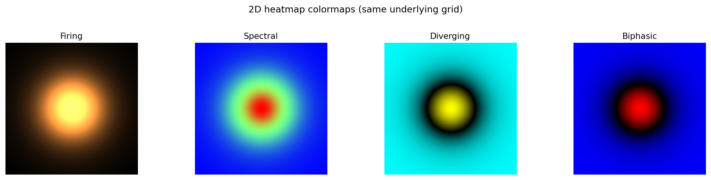
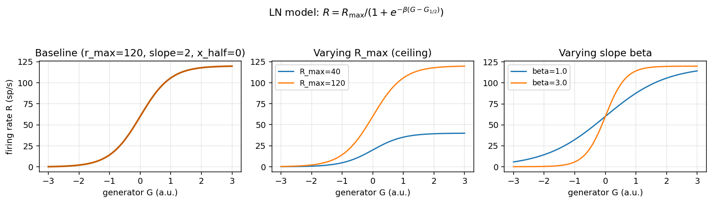
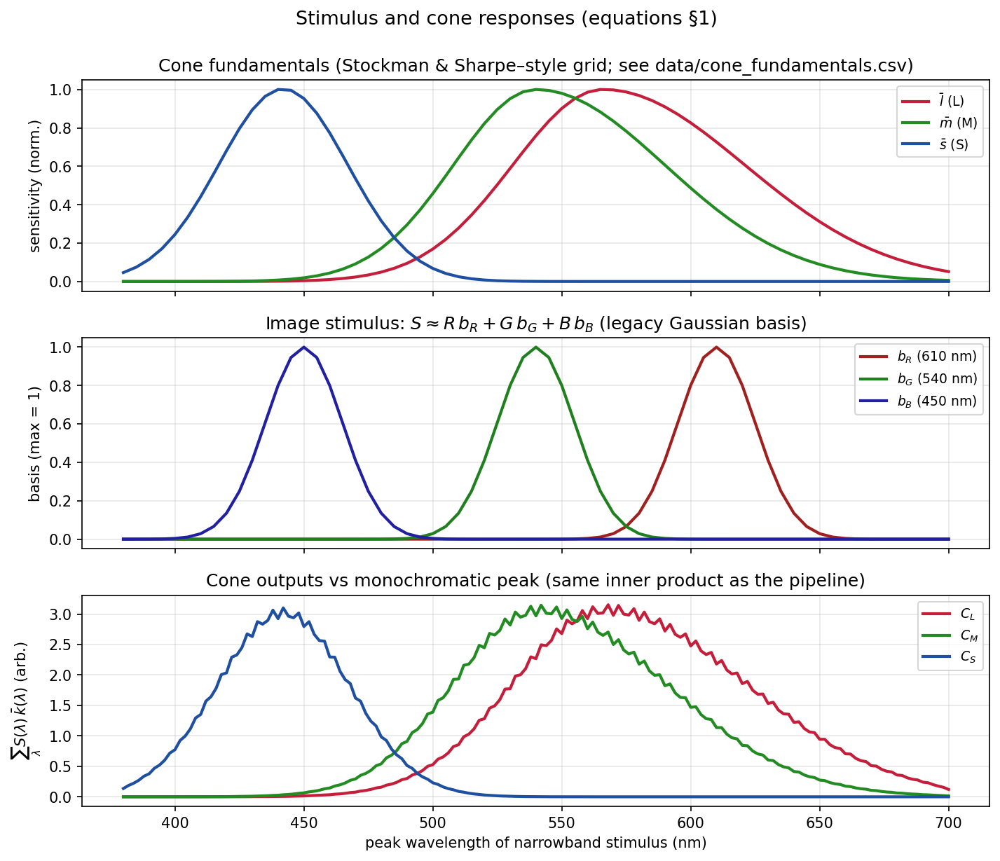
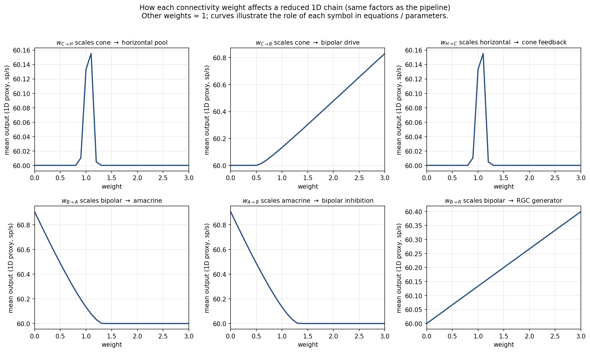

Examples and plots
This page ties together what you see in the UI, the rendering helpers used for 2D views, and the equations in the concepts section. Figures below are generated by scripts/generate_doc_example_plots.py so they stay in sync with the repository.
See also
Conceptual overview — signal-flow overview
Biological background — cell types and retina context
Model equations — full mathematical model (Parameters (reference) lists tunables); some figures are embedded there too
User interface — where each control lives in the window
Heatmaps (same code as the app)
The 2D viewer turns layer grids into RGBA textures via grid_to_rgba in src/rendering/heatmap.py. The Heatmap colormap combo (Firing, Spectral, Diverging, Biphasic) selects the same four modes shown here on one synthetic blob—normalization is shared across colormaps.
{kind=link}

Four colormaps applied to the same underlying 2D grid (see Model equations for what feeds those grids).
LN firing nonlinearity (cell parameters)
RGC firing uses a sigmoid linear–nonlinear (LN) mapping from generator to rate (sp/s). In Cell parameters you can edit r_max, slope, x_half, and time constants—see Parameters (reference) and section 7 of Model equations.
{kind=link}

Baseline LN curve and the effect of R_max and slope (\(\beta\)).
Cone fundamentals, image bases, and monochromatic sweep
These panels are equation-driven: fundamentals and inner products match the notation in Model equations §1 (see the same figure embedded in that page).
{kind=link}

Top: \(\bar{l},\bar{m},\bar{s}\) on the simulator wavelength grid. Middle: RGB Gaussian bases for image stimuli (legacy mapping). Bottom: cone outputs vs peak wavelength of a narrowband stimulus (discrete dot product, same form as the pipeline).
Connectivity weight sensitivity (reduced 1D chain)
Circuit tuning → Synaptic weights applies multipliers \(w\) in \([0,3]\) with the same role as in the equations. The plot below shows how each weight affects a mean downstream signal when the others are fixed at 1, using a reduced 1D chain that mirrors the multiplicative structure of pipeline.tick (Gaussian pools, rectification, amacrine inhibition, LN). It is a schematic sensitivity—see Model equations for the full 2D model and the embedded figure under Parameters (reference).
{kind=link}

One panel per weight; horizontal axis is the weight value, vertical axis is the mean LN output of the 1D proxy (sp/s).
Regenerating the figures
From the repository root (NumPy + Matplotlib required; no Dear PyGui or OpenGL):
python scripts/generate_doc_example_plots.py
PNG files are written to docs/_static/examples/. Rebuild Sphinx afterward (see docs/README.md).
Suggested workflows
Spot vs full field — Start with Stimulus type = spot (Model equations, stimulus section), then switch to full_field to see surround and horizontal feedback interact (center–surround in Biological background).
2D layer tour — Use Layer (2D Heatmap) to step Stimulus → Cones → Horizontal → … → RGC, matching the numbered stages in Conceptual overview.
Tune the LN — Lower r_max in Cell parameters and watch Stats and the RGC sparkline on the right; compare to the LN plots above.
Weights — Set Bipolar to RGC toward 0 to starve RGC drive (see pipeline scaling in Model equations), then reset to 1.0.